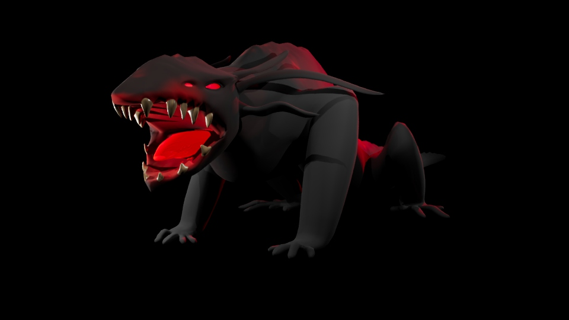

Model 3D

L'Ombre
Voici l’Ombre. C’est l’un des personnages que j’ai créés pour mon jeu d’horreur, qui était un projet d’équipe pour l’école. Je me suis inspiré de l’axolotl et je l’ai rendu un peu plus effrayant, puisqu’il s’agit du monstre principal du jeu. J’étais responsable de la conception du concept et de l’apparence de la créature, en visant à la rendre à la fois inquiétante et intrigante.
Date : 2024
Logiciels :

Casque Dragon
J'ai réalisé ce projet en m'inspirant du film Le seigneur des anneaux en dessinant l'oeil au milieu. Je suis fière du résultat des motifs sur la partie dorée. J'ai travaillé le bump de cette partie à la main via maya ainsi que photoshop.
Date :2023
Logiciels :
Masque CyberAqua
https://youtu.be/I6MvOWYkdiE
Ce projet marque ma première réalisation sur le logiciel Autodesk Maya. L’univers d’Ocearim se déroule dans une civilisation sous-marine issue d’anciens humains, les Ocearii, transformés il y a des siècles par la mystérieuse Pierre de Lune afin de survivre au Grand Déluge. Cette pierre sacrée confère des pouvoirs à la royauté et maintient l’équilibre technologique et vital de leur cité sous-marine, Ocearim.
Date :2023
Logiciels :
Véhicule fictif
https://youtu.be/MC6mVCNsGg0
Cette moto s’inscrit dans le même univers que mon projet CyberAqua. Son design fusionne les formes organiques d’un bernard-l’ermite avec la mécanique futuriste d’une moto, explorant l’équilibre entre nature et technologie. Ce concept illustre ma recherche d’une esthétique biomécanique, où les éléments vivants et artificiels coexistent harmonieusement.
Date :2024
Logiciels :

Mirage
https://youtu.be/XsZMy3jDJIE
Mirage est un personnage de dessin animé fictif qui sert d’antagoniste dans l’histoire, incarnant une énergie sombre puissante et mystérieuse. J’ai conçu et animé le personnage, puis rassemblé tous les éléments pour créer une composition de poster cohérente.
Date :2024
Logiciels :
ChopStick Cat
C'est un exercie que j'ai recréer a partir d'un tutoriel sur youtube J'ai manipuler la fonctionnalité Grease Pencil pour donner l'effet de dessin.
Date :2025
Logiciels :
Jeu vidéo
Prototype Puissance 4 Multijoueur
https://youtu.be/hQWLcViOH_k
J’ai développé un prototype de Puissance 4 multijoueur pour 3 joueurs sous Unity, intégrant une connexion en ligne via Unity Relay. Le projet a été conçu et testé en format mobile grâce à la simulation mobile d’Unity, permettant d’optimiser l’interface et l’expérience utilisateur sur smartphone.
Date :2025
Logiciels :
L'Ombre
https://youtu.be/N9P01a59hgA
L’Ombre est un jeu de plateforme 3D d’horreur dans lequel vous incarnez R.E.D, un petit robot de maintenance envoyé en mission de dernier recours. À bord d’un vaisseau scientifique abandonné, la recherche a mal tourné et quelque chose de sombre rôde désormais dans les couloirs. Votre objectif : sauver ce qu’il reste de l’expérience et survivre à ce qui s’y cache. Le projet à été réalisé en équipe avec Peterson Germain et Laura Visentin.
Date :2024
Logiciels :
Prototype d'une simulation de fastfood
https://youtu.be/AlptUCjWEkE
J’ai réalisé un prototype de simulation de fast-food développé sous Unity, pour lequel je me suis principalement occupé de la programmation des mécaniques et du comportement du jeu. Les éléments visuels et modèles 3D proviennent de l’Asset Store Unity, intégrés et adaptés pour créer une expérience cohérente et fonctionnelle.
Date :2024
Logiciels :
Sites Webs

Agence de Voyage
https://gftnth00.mywhc.ca/4w4_27/
Dans le cadre de ce projet, j’ai conçu et développé un site web complet sous WordPress, tout en intégrant des fonctionnalités avancées grâce à l’utilisation de HTML/CSS, SASS, JavaScript et PHP. J’ai également créé des templates personnalisés en PHP pour répondre aux besoins spécifiques du projet, tout en veillant à respecter les bonnes pratiques d’architecture d’un thème WordPress. L’intégration front-end a été réalisée en HTML/CSS, avec une organisation optimisée grâce à SASS pour améliorer la maintenabilité et la cohérence du code.
Date :2024
HTML/CSS/PHP/javascript
Wordpress

Le jeu du pendu
https://giroma18.github.io/Jeu_Du_Pendu/
J’ai développé un jeu du pendu principalement en JavaScript, avec une structure en HTML/CSS. Le projet comprend la logique du jeu (sélection des mots, gestion des lettres, détection des erreurs, conditions de victoire/défaite) ainsi que l’interaction avec le DOM pour afficher l’état du pendu et les lettres trouvées. Ce projet m’a permis de renforcer mes compétences en JavaScript et en création d’interfaces interactives.
Date :2024
HTML/CSS/javascript

Projet finissants
https://giroma18.github.io/ProjetPhoto/
Dans le cadre d’un exercice réalisé en classe, je me suis chargé de créer l’ensemble du site web en HTML/CSS et JavaScript. J’ai intégré les visuels fournis (photos non personnelles) et développé la mise en page ainsi que les animations et interactions JavaScript pour rendre le site dynamique et agréable à utiliser. Ce projet m’a permis de renforcer mes compétences en intégration web et en animation front-end.
Date :2024
HTML/CSS/Javascript
Affiches


Le fol espoir
Création d’une affiche promotionnelle pour Le Fol Espoir, une revue qui met en scène les œuvres littéraires et cinématographiques des étudiants du Collège de Maisonneuve.
Date :2020
Logiciels :


{kind=link}
{kind=link}
{kind=link}
{kind=link}
Illustrations d'animaux
Réalisation d’une série d’affiches sur Adobe Illustrator, représentant des toucans et un crabe. Les illustrations ont été créées à partir de photos de référence, en utilisant principalement l’outil Plume pour construire des formes précises et stylisées.
Date :2023
Logiciels :

Affiche de film fictif
Création d’une affiche sur Photoshop en utilisant plusieurs techniques de découpage et de montage d’images, afin de composer une visuelle cohérente et impactante.
Date :2023
Logiciels :
Montages Vidéos
Vidéo Promotionnelle
https://youtu.be/hSlbCLoGyIA
Création d’une vidéo promotionnelle fictive avec After Effects pour annoncer un tournoi de volleyball à Montréal. Le travail inclut l’animation graphique, le montage visuel et la mise en scène d’éléments dynamiques pour renforcer l’impact visuel.
Date :2024
Logiciels :
À ne plus rejouer
https://youtu.be/xdE_AR4OTNo
Création d’une vidéo narrative avec Premiere Pro, basée sur l’univers d’un jeu de société composé de trois règles simples. Le montage met l’accent sur la narration, le rythme et la mise en scène visuelle pour raconter l’histoire. Le projet à été réaliser avec Peterson Germian et Skyler England-Louis-Pierre.
Date :2023
Logiciels :
Télé-Québec
Réalisation d’une vidéo promotionnelle fictive pour Télé-Québec, mettant en avant la thématique des films de science-fiction. Le montage a été réalisé avec Premiere Pro, en intégrant des effets visuels et une mise en scène dynamique pour capter l’attention et transmettre l’ambiance futuriste des films.
Date :2023
Logiciels :